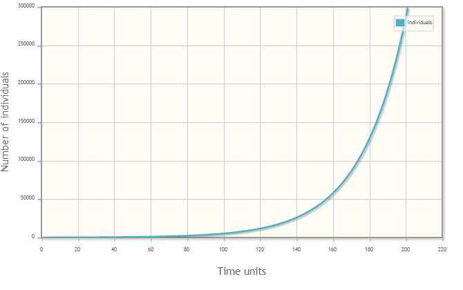

        <h2 class="model_header">PFAM Output</h2>
        <form>
            <table align="center">
                <!--end 04uberoutput_start-->
                <table class="out_chemical" width="550" border="1">
                    <tr>
                        <th scope="col" colspan="5">
                            <div align="center">Chemical Inputs</div>
                        </th>
                    </tr>
                    <tr>
                        <th scope="col" width="250">
                            <div align="center">Variable</div>
                        </th>
                        <th scope="col" width="150">
                            <div align="center">Unit</div>
                        </th>
                        <th scope="col" width="150">
                            <div align="center">Value</div>
                        </th>
                    </tr>
                    <tr>
                        <td>
                            <div align="center">Water Column Half life @20 &#8451</div>
                        </td>
                        <td>
                            <div align="center">days</div>
                        </td>
                        <td>
                            <div align="center">11</div>
                        </td>
                    </tr>
                </table>
            </table>
        </form>
<br>